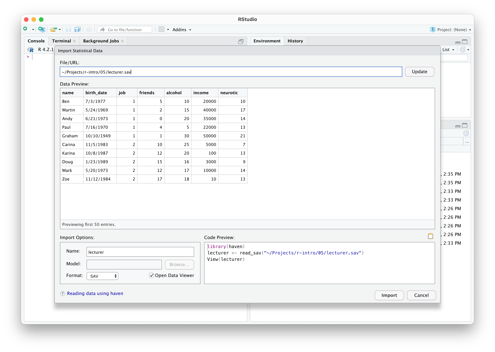

library(readr)Allgemeines
R kann mit Daten in vielen unterschiedlichen Formaten umgehen, beispielsweise mit Excel-Tabellen oder auch SPSS-Datensätzen. Diese Formate sind allerdings proprietär und daher für das Abspeichern eigener Daten weniger gut geeignet. Idealerweise speichert man Daten in einem offenen und möglichst einfach aufgebauten Format ab, welches man mit einer Vielzahl an (frei verfügbaren) Programmen öffnen kann. Ein Beispiel für ein einfaches Format ist eine Textdatei, die man mit jedem beliebigen Texteditor öffnen kann.
Textdateien
Daten in Textdateien werden häufig mit Kommas voneinander getrennt – so kann man Werte aus mehreren Spalten einer Tabelle darstellen. Solche speziell formatierten Textdateien haben daher häufig die Endung .csv (“comma-separated values”). Es gibt aber auch andere Möglichkeiten, Werte (bzw. Spalten) voneinander zu trennen, z.B. mit Semikolons (Strichpunkten) oder Tabulatoren. Solche Dateien haben dann oft die Endungen .dat oder .tsv (“tab-separated values”).
Hinweis
Dateiendungen sind eine Konvention und müssen nicht zwingend etwas mit dem tatsächlichen Inhalt der Datei zu tun haben. Textdateien werden oft mit den bereits erwähnten Erweiterungen .csv, .tsv und .dat versehen. Es kann aber durchaus vorkommen, dass eine Textdatei z.B. mit der Endung .csv Werte mit Tabulatoren oder Strichpunkten trennt statt mit Kommas. Letztendlich kann man das nur herausfinden, indem man die Datei öffnet.
Das Tidyverse beinhaltet das Paket readr, welches Textdateien in den unterschiedlichsten Formaten importieren kann. Dies funktioniert oft besser und schneller als mit den Funktionen, die standardmäßig mit R mitgeliefert werden. Die mit dem readr-Paket eingelesenen Daten stehen außerdem gleich als Tibble zur Verfügung. Daher werden wir in dieser Lehrveranstaltung ausschließlich Funktionen aus readr zum Importieren von Textdateien verwenden.
Wichtig
Funktionen zum Importieren von Textdaten aus dem readr-Paket beginnen alle mit read_, wohingegen die mit R mitgelieferten Funktionen mit read. beginnen.
Die wichtigste Funktion aus dem Paket readr heißt read_delim(). Hier kann man sehr viele Parameter genau auf die einzulesende Datei abstimmen (z.B. das Spaltentrennzeichen, ob es eine Kopfzeile mit Spaltennamen gibt, ob Kommentare oder fehlende Werte vorhanden sind, usw.). Für Daten im CSV-Format (Spalten sind durch Kommas getrennt) gibt es die Wrapper-Funktion read_csv(), welche sinnvolle Standardwerte für diverse Argumente annimmt. Für Daten, die mit Tabulatoren getrennt sind, gibt es die Wrapper-Funktion read_tsv().
Hinweis
Diese “Wrapper-Funktionen” rufen im Grunde also einfach read_delim() mit speziellen Argumenten auf.
Als Beispiel sehen wir uns eine Textdatei namens lecturer.csv an. Wenn man nicht weiß, wie die Daten in einer Textdatei tatsächlich formatiert sind, kann man deren Inhalt mit der Funktion file.show() im RStudio-Editor öffnen:
file.show("lecturer.csv")name,birth_date,job,friends,alcohol,income,neurotic
Ben,7/3/1977,1,5,10,20000,10
Martin,5/24/1969,1,2,15,40000,17
Andy,6/21/1973,1,0,20,35000,14
Paul,7/16/1970,1,4,5,22000,13
Graham,10/10/1949,1,1,30,50000,21
Carina,11/5/1983,2,10,25,5000,7
Karina,10/8/1987,2,12,20,100,13
Doug,1/23/1989,2,15,16,3000,9
Mark,5/20/1973,2,12,17,10000,14
Zoe,11/12/1984,2,17,18,10,13Man erkennt, dass bei dieser konkreten Datei die einzelnen Spalten tatsächlich durch Kommas getrennt sind (hier passt also die Endung .csv zum Inhalt). Außerdem ist eine Kopfzeile mit den Spaltennamen vorhanden.
Die Funktion read_delim() erkennt das Spaltentrennzeichen meistens automatisch, d.h. es reicht, wenn man ihr lediglich den Dateinamen als Argument übergibt:
read_delim("lecturer.csv")# A tibble: 10 × 7
name birth_date job friends alcohol income neurotic
<chr> <chr> <dbl> <dbl> <dbl> <dbl> <dbl>
1 Ben 7/3/1977 1 5 10 20000 10
2 Martin 5/24/1969 1 2 15 40000 17
3 Andy 6/21/1973 1 0 20 35000 14
4 Paul 7/16/1970 1 4 5 22000 13
5 Graham 10/10/1949 1 1 30 50000 21
6 Carina 11/5/1983 2 10 25 5000 7
7 Karina 10/8/1987 2 12 20 100 13
8 Doug 1/23/1989 2 15 16 3000 9
9 Mark 5/20/1973 2 12 17 10000 14
10 Zoe 11/12/1984 2 17 18 10 13Falls die automatische Erkennung einmal nicht funktionieren sollte, kann man das Trennzeichen aber mit dem Argument delim explizit übergeben:
read_delim("lecturer.csv", delim=",")# A tibble: 10 × 7
name birth_date job friends alcohol income neurotic
<chr> <chr> <dbl> <dbl> <dbl> <dbl> <dbl>
1 Ben 7/3/1977 1 5 10 20000 10
2 Martin 5/24/1969 1 2 15 40000 17
3 Andy 6/21/1973 1 0 20 35000 14
4 Paul 7/16/1970 1 4 5 22000 13
5 Graham 10/10/1949 1 1 30 50000 21
6 Carina 11/5/1983 2 10 25 5000 7
7 Karina 10/8/1987 2 12 20 100 13
8 Doug 1/23/1989 2 15 16 3000 9
9 Mark 5/20/1973 2 12 17 10000 14
10 Zoe 11/12/1984 2 17 18 10 13Das Ergebnis (ein Tibble) sieht korrekt aus – es hat 10 Zeilen und 7 Spalten mit sinnvollen Datentypen in allen Spalten. Wir können es direkt einer Variablen zuweisen, um damit weiterarbeiten zu können:
df = read_delim("lecturer.csv")Für diese Datei hätten wir alternativ auch die Wrapper-Funktion read_csv() verwenden können, hier wird standardmäßig ein Komma als Spaltentrennzeichen angenommen:
read_csv("lecturer.csv")Sehen wir uns als zweites Beispiel dieselben Daten an, die aber diesmal mit Tabulatoren voneinander getrennt in einer .dat-Datei vorliegen. Um diese Datei namens lecturer.dat einzulesen, können wir entweder die generische Funktion read_delim() mit der automatischen Erkennung verwenden (bzw. falls das nicht funktionieren sollte mit delim="\t", wobei \t die Darstellung des Tabulator-Zeichens ist) oder direkt die spezialisierte Funktion read_tsv():
read_delim("lecturer.dat")
read_delim("lecturer.dat", delim="\t")
read_tsv("lecturer.dat")Ein weiteres wichtiges Merkmal solcher Textdateien ist das verwendete Dezimaltrennzeichen bei Kommazahlen. In der englischen Schreibweise wird ein Punkt als Dezimaltrennzeichen verwendet (z.B. 12.3 oder 3.1415). In der deutschen Schreibweise wird hingegen ein Komma verwendet (z.B. 12,3 oder 3,1415). Das Dezimaltrennzeichen kann in der Funktion read_delim() mit dem Argument locale festgelegt werden. Es ist standardmäßig auf einen Punkt gesetzt, ebenso bei den Funktionen read_csv() und read_tsv(). Sollten Zahlen jedoch in der deutschen Schreibweise vorliegen, können die Spalten nicht auch durch Kommas getrennt sein – hier werden diese dann oft durch Semikolons getrennt. Für solche Textdateien setzt man daher die Argumente delim=";" und locale=locale(decimal_mark=",") bzw. verwendet die Wrapper-Funktion read_csv2() (welche ein Semikolon als Spaltentrennzeichen und ein Komma als Dezimaltrennzeichen annimmt).
Wichtig
Unabhängig davon, wie Dezimaltrennzeichen in den Textdateien dargestellt werden, verwendet R für Dezimalzahlen immer einen Punkt!
Daten aus SPSS
Sollen bereits vorhandene SPSS-Datensätze (.sav) importiert werden, kann man dazu die Funktion read_sav() aus dem Paket haven verwenden. Das Ergebnis ist wieder ein Tibble. Das haven-Paket kann übrigens auch Daten aus SAS und Stata importieren. Das folgende Beispiel importiert Daten aus der Datei lecturer.sav:
library(haven)
df = read_sav("lecturer.sav")Daten aus Excel
Wenn Daten als Excel-Datei (Endung .xlsx oder .xls) vorliegen, verwendet man zum Einlesen die Funktion read_excel() aus dem Paket readxl. Da dieses Paket Teil des Tidyverse ist, bekommt man auch hier ein Tibble zurückgeliefert, wie das folgende Beispiel anhand von lecturer.xlsx zeigt:
library(readxl)
df = read_excel("lecturer.xlsx")Importieren mit RStudio
Mit RStudio kann man Daten in vielen Formaten auch mit einem grafischen Dialog importieren. Praktischerweise bekommt man immer den dazugehörigen R-Code mitgeliefert, welcher die Daten korrekt importiert – diesen Code kann man dann in eigenen Scripts verwenden.
Dazu klickt man in der Files-Ansicht rechts unten auf die gewünschte Datei und wählt Import Dataset aus. Alternativ kann man in der Environment-Ansicht rechts oben auf Import Dataset, gefolgt vom gewünschten Format, klicken. Diese Funktionalität ist auch im File-Menü unter dem Eintrag Import Dataset zu finden. Es öffnet sich ein neues Fenster, in dem man eine Vorschau der zu importierenden Datei sieht. Es gibt hier auch die Möglichkeit, Optionen zu ändern – wie sich das auf die eingelesenen Daten auswirkt, ist in der Vorschau unmittelbar ersichtlich. Der zugehörige Code befindet sich dann rechts unten. Im folgenden Bild sieht man diesen Dialog beispielhaft für eine zu importierende SPSS-Datei.

Daten aufbereiten
In welchem Dateiformat die Daten auch immer vorliegen, schlussendlich landen sie in einem Data Frame (oder Tibble), welches wir dann in R weiterverwenden können. In den allermeisten Fällen wird man das Data Frame noch aufbereiten müssen, damit jede Spalte auch wirklich im gewünschten Format vorliegt. Sehen wir uns das anhand unserer Beispieldaten an:
(df = read_csv("lecturer.csv"))# A tibble: 10 × 7
name birth_date job friends alcohol income neurotic
<chr> <chr> <dbl> <dbl> <dbl> <dbl> <dbl>
1 Ben 7/3/1977 1 5 10 20000 10
2 Martin 5/24/1969 1 2 15 40000 17
3 Andy 6/21/1973 1 0 20 35000 14
4 Paul 7/16/1970 1 4 5 22000 13
5 Graham 10/10/1949 1 1 30 50000 21
6 Carina 11/5/1983 2 10 25 5000 7
7 Karina 10/8/1987 2 12 20 100 13
8 Doug 1/23/1989 2 15 16 3000 9
9 Mark 5/20/1973 2 12 17 10000 14
10 Zoe 11/12/1984 2 17 18 10 13Man erkennt, dass die numerischen Werte korrekt als Zahlen erkannt wurden (die Abkürzung <dbl> bedeutet “double” und entspricht Dezimalzahlen, d.h. einem numerischen Vektor). Allerdings besitzt die dritte Spalte job lediglich zwei Werte, welche eigentlich zwei verschiedene Berufe repräsentieren (1 steht für den Beruf “Lecturer”, 2 für den Beruf “Student”). Hier wäre eine kategorische Spalte (ein Faktor, dazu gleich mehr) besser geeignet als eine numerische. Die erste Spalte name wurde korrekt als chr (Character-Vektor) erkannt. Auch die zweite Spalte birth_date wurde als Charakter-Vektor erkannt, aber es gibt in R einen eigenen Datentyp für Datumswerte (was u.a. das Rechnen mit solchen Werten ermöglicht).
Faktoren
Kategorische Variablen, d.h. Variablen, die nur eine bestimmte Anzahl an Werten annehmen können, werden in R mit dem Typ factor dargestellt. Die Funktion factor() kann einen entsprechenden Vektor erzeugen. Standardmäßig werden nicht geordnete (also nominale) Faktoren erzeugt. Setzt man das Argument ordered=TRUE, kann man auch einen geordneten Faktor (also eine ordinale Variable) erzeugen.
Im Beispiel ist die Spalte job vom Typ dbl, sollte aber als Faktor interpretiert werden. Die Spalte kann entsprechend neu erstellt und überschrieben werden (hier wird vorausgesetzt, dass wir wissen, welche Zahlen den jeweiligen Faktorstufen entsprechen, also 1 entspricht “Lecturer” und 2 entspricht “Student”):
df$job = factor(df$job, levels=c(1, 2), labels=c("Lecturer", "Student"))
df# A tibble: 10 × 7
name birth_date job friends alcohol income neurotic
<chr> <chr> <fct> <dbl> <dbl> <dbl> <dbl>
1 Ben 7/3/1977 Lecturer 5 10 20000 10
2 Martin 5/24/1969 Lecturer 2 15 40000 17
3 Andy 6/21/1973 Lecturer 0 20 35000 14
4 Paul 7/16/1970 Lecturer 4 5 22000 13
5 Graham 10/10/1949 Lecturer 1 30 50000 21
6 Carina 11/5/1983 Student 10 25 5000 7
7 Karina 10/8/1987 Student 12 20 100 13
8 Doug 1/23/1989 Student 15 16 3000 9
9 Mark 5/20/1973 Student 12 17 10000 14
10 Zoe 11/12/1984 Student 17 18 10 13Die drei Argumente haben dabei folgende Bedeutung:
df$jobsind die Ausgangsdaten.levels=c(1, 2)gibt an, welche Werte (Stufen) in den Ausgangsdaten vorkommen und wir auch verwenden möchten.labels=c("Lecturer", "Student")weist den verwendeten Stufen entsprechende Namen (Labels) zu.
Die Spalte job hat nun den gewünschten Typ (<fct> in der Tibble-Darstellung). Dies können wir auch mit der altbekannten Funktion class() explizit überprüfen:
class(df$job)[1] "factor"Datumswerte
Für Datumswerte gibt es in R ebenfalls einen eigenen Datentyp, der das Rechnen mit solchen Werten erleichtert. Die Funktion as.Date() wandelt eine Datumsangabe in Textform in diesen speziellen Typ um. Anzugeben ist hier insbesondere das Argument format, welches das Format der vorliegenden Datumswerte spezifiziert (d.h. man beschreibt damit, wie die Datumswerte ursprünglich aussehen).
df$birth_date = as.Date(df$birth_date, format="%m/%d/%Y")
df# A tibble: 10 × 7
name birth_date job friends alcohol income neurotic
<chr> <date> <fct> <dbl> <dbl> <dbl> <dbl>
1 Ben 1977-07-03 Lecturer 5 10 20000 10
2 Martin 1969-05-24 Lecturer 2 15 40000 17
3 Andy 1973-06-21 Lecturer 0 20 35000 14
4 Paul 1970-07-16 Lecturer 4 5 22000 13
5 Graham 1949-10-10 Lecturer 1 30 50000 21
6 Carina 1983-11-05 Student 10 25 5000 7
7 Karina 1987-10-08 Student 12 20 100 13
8 Doug 1989-01-23 Student 15 16 3000 9
9 Mark 1973-05-20 Student 12 17 10000 14
10 Zoe 1984-11-12 Student 17 18 10 13In diesem Beispiel bedeutet das Argument format="%m/%d/%Y", dass die Werte ursprünglich in der Reihenfolge Monat/Tag/Jahr vorliegen und mit einem / getrennt sind (%m steht also für einen Monat, %d für einen Tag und %Y für eine vierstellige Jahreszahl).
Betrachten wir ein weiteres Beispiel. Nehmen wir an, wir hätten folgenden Character-Vektor dates mit Datumswerten:
(dates = c("23.3.95", "17.7.96", "9.12.04", "1.1.10", "23.2.17"))[1] "23.3.95" "17.7.96" "9.12.04" "1.1.10" "23.2.17"class(dates)[1] "character"Die einzelnen Zahlen sind mit einem . voneinander getrennt. Nun müssen wir die Bedeutung der drei Zahlen herausfinden. Durch betrachten aller Werte stellt man fest, dass die Reihenfolge Tag, Monat und Jahr (zweistellig) ist. Das entsprechende format-Argument lautet daher format="%d.%m.%y":
(dates = as.Date(dates, format="%d.%m.%y"))[1] "1995-03-23" "1996-07-17" "2004-12-09" "2010-01-01" "2017-02-23"class(dates)[1] "Date"Die Kürzel %d, %m, %y und noch viele weitere sind in der Hilfe von as.Date() bzw. eigentlich strptime() beschrieben – machen Sie sich daher vor allem mit letzterer vertraut (?strptime), denn diese Kürzel muss man sich nicht auswendig merken.
Daten speichern
Wenn man ein bestehendes Data Frame oder Tibble als Textdatei speichern möchte, geht das am einfachsten mit der Funktion write_delim() (bzw. write_csv() und write_tsv()) aus dem readr-Paket. Dies funktioniert prinzipiell ganz analog zu den oben beschriebenen Lesefunktionen, nur gibt man hier sowohl das zu speichernde Data Frame als auch den Dateinamen an.
Tipp
Es sollten nur kleine bis mittelgroße Datensätze als Textdateien gespeichert werden. Bei großen Datensätzen würde die entstehende Datei sehr viel Speicherplatz benötigen – in solchen Fällen sollte man effizientere Datenformate verwenden wie z.B. das in R verfügbare Datenformat .RData, welches mit der Funktion save() erzeugt bzw. mit load() gelesen werden kann. Noch bessere Alternativen sind die hocheffizienten und offenen Formate Parquet und Feather, welche sowohl mit R als auch mit Python und vielen weiteren Programmiersprachen importiert werden können.
Übungen
Übung 1
Sehen Sie sich die Hilfe zur Funktion read_delim() aus dem readr-Paket an. Welches Argument setzt das Trennzeichen der Spalten? Welches Argument setzt das Dezimaltrennzeichen? Mit welchem Argument können Sie das Zeichen für fehlende Werte festlegen?
Übung 2
Importieren Sie die Datei homework.csv und geben Sie das entstehende Tibble am Bildschirm aus. Achten Sie darauf, dass Sie die in der Datei verwendeten Spalten- bzw. Dezimaltrennzeichen korrekt erkennen (Achtung: Kommazahlen sind im deutschen Format vorhanden). Welche Datentypen haben die vier Spalten?
Übung 3
In der Datei wahl16.csv befinden sich die Ergebnisse der Bundespräsidentenwahl 2016 (und zwar nach dem ersten Wahlgang mit den sechs ursprünglichen Kandidaten/Kandidatinnen). Importieren Sie diese Daten in ein Tibble namens wahl16und berechnen Sie die relative Gesamtanzahl an Stimmen für jede Kandidatin/jeden Kandidaten (die Funktionen colSums(), rowSums() sowie sum() könnten dabei hilfreich sein).
Übung 4
Die Datei covid19.csv enthält Daten zu den täglichen Covid19-Neuinfektionen in Österreich im Zeitraum 26.2.2020 bis 26.6.2023. Importieren Sie diese Datei in R (achten Sie auf geeignete Argumente, um die Datei richtig einzulesen wie z.B. das korrekte Spaltentrennzeichen sowie Dezimaltrennzeichen)! Aus wie vielen Zeilen und Spalten besteht dieser Datensatz?
Achten Sie besonders auf die Spalte SiebenTageInzidenzFaelle – diese beinhaltet Dezimalzahlen und sollte dementsprechend numerisch sein!
Konvertieren Sie auch die Spalte Time in ein Datumsformat (die Uhrzeit in dieser Spalte können Sie einfach ignorieren)!
Übung 5
Das UCI Machine Learning Repository stellt viele Datensätze zur freien Verwendung zur Verfügung. Wir betrachten für diese Übung den Datensatz Individual Household Electric Power Consumption, und zwar die Datei household_power_consumption.zip. Sie müssen diese Datei nicht entpacken, sondern können diese direkt mit der Funktion read_delim() laden.
Die Datei beinhaltet die minütliche elektrische Leistungsaufnahme eines Haushalts in einem Zeitraum von fast vier Jahren. Insgesamt gibt es über 2 Millionen Messpunkte und 9 Variablen, welche durch Strichpunkte voneinander ; getrennt sind. Fehlende Werte sind mit einem Fragezeichen ? bzw. mit tatsächlich fehlenden Einträgen codiert.
Lesen Sie die Daten in ein Tibble namens df ein und geben Sie es am Bildschirm aus um folgende Fragen zu beantworten:
- Wie viele Zeilen und Spalten hat das Data Frame?
- Welche Spalten könnte man eventuell noch in einen passenderen Typ umwandeln?
Tipp
Es ist wichtig, dass R beim Einlesen der Daten fehlende Werte korrekt erkennt. Stellen Sie durch Setzen des entsprechenden Argumentes der Funktion read_delim() sicher, dass diese fehlenden Werte richtig eingelesen werden (und somit korrekt als NA interpretiert werden)! Es kommen sowohl "?" als auch "" als fehlende Werte in der Datei vor.
Die korrekt importierten Daten sollten in einem Tibble mit den folgenden Spaltentypen vorhanden sein: eine Spalte chr, sieben Spalten dbl und eine Spalte time.
Übung 6
Gegeben sei der folgende numerische Vektor x:
x = c(1, 2, 3)Was passiert, wenn Sie diesen Vektor in einen Faktor konvertieren möchten, aber nur die Stufen 1 und 2 (mit den Labels "one" und "two") verwenden möchten? Wie wird der Wert 3 behandelt?